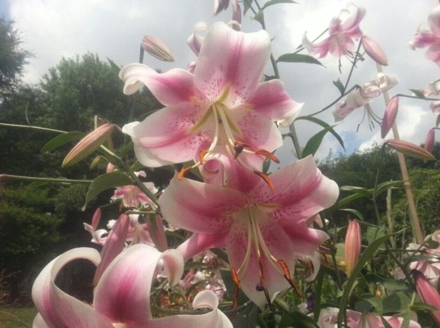

Sobre mim
As flores têm o poder de tocar nossos corações de maneiras que muitas vezes transcendem as palavras.
Cada flor carrega consigo um simbolismo que pode ser profundamente pessoal e significativo, tornando-as um meio
de expressão emocional extraordinário.Desde tempos antigos, as flores têm sido usadas como símbolos de amor,
amizade, gratidão e celebração. Um buquê de rosas vermelhas pode expressar um amor apaixonado, enquanto lírios
brancos podem transmitir respeito e pureza. Quando oferecidas, as flores têm o poder de comunicar sentimentos
que muitas vezes são difíceis de expressar verbalmente.Em momentos de luto, as flores servem como um tributo
silencioso à memória de alguém que partiu, oferecendo um conforto silencioso e uma maneira de expressar solidariedade.
Elas se tornam símbolos de esperança e renovação, lembrando-nos de que, mesmo na tristeza, há beleza e amor a
serem encontrados.Elas têm a capacidade de alegrar nossos dias, de comunicar sentimentos profundos e de proporcionar
consolo e esperança. Em um mundo onde as palavras muitas vezes falham em capturar a totalidade dos nossos sentimentos,
as flores se tornam um elo precioso que une o visível e o invisível, o tangível e o intangível, oferecendo um toque de
beleza e sentimento que enriquece nossas vidas.
